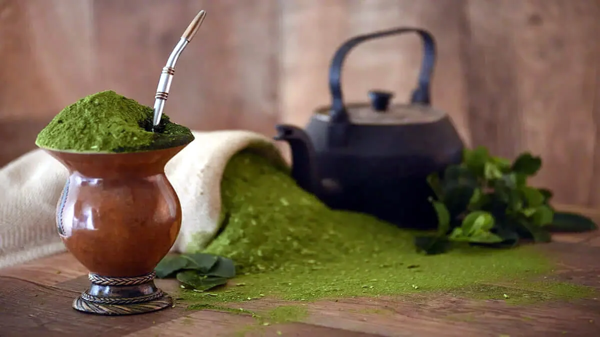

Chimarrão
O Chimarrão é uma bebida tradicional do Sul do Brasil, especialmente do Rio Grande do Sul, feita com erva-mate e água quente. É símbolo de cultura, hospitalidade e convivência entre amigos e família.

Ingredientes
Serve 1 porção
- Erva-mate de boa qualidade
- Água quente (70°C a 80°C)
- Cuia e bomba para servir
Modo de Preparo
Tempo estimado: 5 minutos
- Encha a cuia até cerca de 2/3 com erva-mate.
- Incline a cuia e bata levemente para que o pó se acomode em um lado.
- Despeje um pouco de água morna no espaço livre, deixando a erva absorver.
- Insira a bomba no lado úmido da cuia.
- Adicione água quente, sem ferver, e tome imediatamente.
Dica do Chef: Evite água fervente, pois queima a erva e deixa o sabor amargo. Chimarrão é melhor apreciado devagar, em boa companhia, respeitando a tradição gaúcha de compartilhar a cuia.